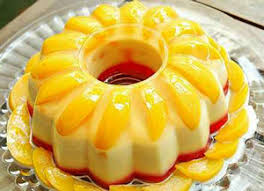

Pudding Buah
Puding adalah sebuah hidangan penutup yang umumnya dibuat dari bahan-bahan yang direbus, dikukus, atau dipanggang. Istilah puding juga dapat dipakai untuk berbagai jenis pai yang berisi campuran lemak hewan, daging, atau buah-buahan yang dipanggang, direbus, atau dikukus. (Sorce : Wikipedia)